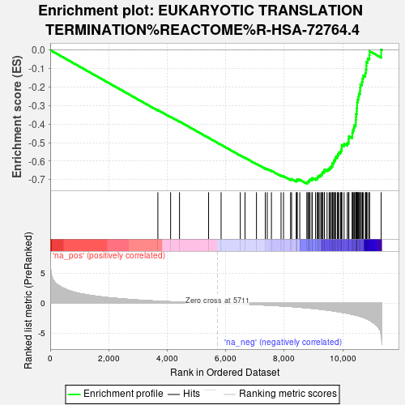
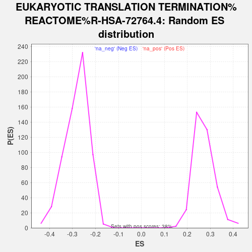

| | | Dataset | deg_ms |
| Phenotype | NoPhenotypeAvailable |
| Upregulated in class | na_neg |
| GeneSet | EUKARYOTIC TRANSLATION TERMINATION%REACTOME%R-HSA-72764.4 |
| Enrichment Score (ES) | -0.7215221 |
| Normalized Enrichment Score (NES) | -2.5581052 |
| Nominal p-value | 0.0 |
| FDR q-value | 0.0 |
| FWER p-Value | 0.0 |
Table: GSEA Results Summary

Fig 1: Enrichment plot: EUKARYOTIC TRANSLATION TERMINATION%REACTOME%R-HSA-72764.4
Profile of the Running ES Score & Positions of GeneSet Members on the Rank Ordered List
| SYMBOL | RANK IN GENE LIST | RANK METRIC SCORE | RUNNING ES | CORE ENRICHMENT | | 1 | APEH | 3680 | 0.359 | -0.3241 | No |
| 2 | GSPT2 | 4116 | 0.262 | -0.3607 | No |
| 3 | RPS27L | 4420 | 0.198 | -0.3860 | No |
| 4 | RPS4Y1 | 5414 | 0.040 | -0.4739 | No |
| 5 | RPS24 | 5842 | -0.018 | -0.5117 | No |
| 6 | RPL22L1 | 6498 | -0.132 | -0.5688 | No |
| 7 | RPL37 | 6659 | -0.162 | -0.5817 | No |
| 8 | RPL31 | 7051 | -0.234 | -0.6146 | No |
| 9 | RPS25 | 7353 | -0.304 | -0.6389 | No |
| 10 | RPL36A | 7420 | -0.318 | -0.6422 | No |
| 11 | RPS11 | 7562 | -0.355 | -0.6518 | No |
| 12 | RPL26 | 7891 | -0.444 | -0.6774 | No |
| 13 | RPL35 | 7976 | -0.471 | -0.6811 | No |
| 14 | RPS20 | 8217 | -0.550 | -0.6979 | No |
| 15 | RPS26 | 8252 | -0.560 | -0.6964 | No |
| 16 | RPL23A | 8410 | -0.620 | -0.7054 | No |
| 17 | RPL12 | 8436 | -0.631 | -0.7025 | No |
| 18 | RPLP1 | 8443 | -0.633 | -0.6979 | No |
| 19 | RPL26L1 | 8531 | -0.671 | -0.7002 | No |
| 20 | RPL21 | 8772 | -0.769 | -0.7153 | Yes |
| 21 | RPL28 | 8808 | -0.785 | -0.7121 | Yes |
| 22 | RPS18 | 8830 | -0.795 | -0.7075 | Yes |
| 23 | RPS8 | 8861 | -0.806 | -0.7036 | Yes |
| 24 | RPL29 | 8880 | -0.815 | -0.6986 | Yes |
| 25 | RPLP2 | 8950 | -0.861 | -0.6978 | Yes |
| 26 | RPS15 | 8954 | -0.864 | -0.6911 | Yes |
| 27 | RPL34 | 9070 | -0.918 | -0.6939 | Yes |
| 28 | RPL37A | 9128 | -0.949 | -0.6913 | Yes |
| 29 | RPL6 | 9143 | -0.954 | -0.6848 | Yes |
| 30 | RPL19 | 9173 | -0.970 | -0.6795 | Yes |
| 31 | RPL14 | 9220 | -0.993 | -0.6756 | Yes |
| 32 | RPL24 | 9270 | -1.023 | -0.6717 | Yes |
| 33 | RPL27A | 9295 | -1.041 | -0.6654 | Yes |
| 34 | RPS6 | 9312 | -1.048 | -0.6583 | Yes |
| 35 | UBA52 | 9368 | -1.085 | -0.6544 | Yes |
| 36 | RPL36 | 9374 | -1.088 | -0.6461 | Yes |
| 37 | RPL30 | 9464 | -1.142 | -0.6447 | Yes |
| 38 | RPL11 | 9533 | -1.191 | -0.6412 | Yes |
| 39 | RPL7 | 9567 | -1.214 | -0.6343 | Yes |
| 40 | TRMT112 | 9611 | -1.239 | -0.6281 | Yes |
| 41 | RPSA | 9645 | -1.255 | -0.6209 | Yes |
| 42 | RPS4X | 9647 | -1.256 | -0.6108 | Yes |
| 43 | RPL38 | 9691 | -1.293 | -0.6041 | Yes |
| 44 | RPL36AL | 9704 | -1.301 | -0.5947 | Yes |
| 45 | RPL32 | 9746 | -1.337 | -0.5875 | Yes |
| 46 | GSPT1 | 9759 | -1.347 | -0.5777 | Yes |
| 47 | RPL23 | 9817 | -1.391 | -0.5715 | Yes |
| 48 | RPL8 | 9838 | -1.401 | -0.5619 | Yes |
| 49 | RPL18 | 9866 | -1.431 | -0.5528 | Yes |
| 50 | RPL10A | 9925 | -1.476 | -0.5460 | Yes |
| 51 | RPS12 | 9952 | -1.502 | -0.5361 | Yes |
| 52 | RPS15A | 9965 | -1.518 | -0.5249 | Yes |
| 53 | RPS17 | 9966 | -1.518 | -0.5126 | Yes |
| 54 | RPS19 | 10046 | -1.582 | -0.5069 | Yes |
| 55 | RPL22 | 10156 | -1.678 | -0.5030 | Yes |
| 56 | RPLP0 | 10199 | -1.719 | -0.4928 | Yes |
| 57 | RPS7 | 10202 | -1.722 | -0.4791 | Yes |
| 58 | RPL7A | 10210 | -1.731 | -0.4657 | Yes |
| 59 | RPS3 | 10326 | -1.866 | -0.4608 | Yes |
| 60 | RPS29 | 10328 | -1.868 | -0.4458 | Yes |
| 61 | RPS21 | 10350 | -1.885 | -0.4324 | Yes |
| 62 | RPL3 | 10381 | -1.926 | -0.4195 | Yes |
| 63 | RPL27 | 10400 | -1.942 | -0.4054 | Yes |
| 64 | RPL4 | 10443 | -2.004 | -0.3929 | Yes |
| 65 | RPS2 | 10447 | -2.008 | -0.3769 | Yes |
| 66 | RPL13 | 10455 | -2.018 | -0.3612 | Yes |
| 67 | RPS9 | 10459 | -2.022 | -0.3451 | Yes |
| 68 | RPL35A | 10479 | -2.043 | -0.3303 | Yes |
| 69 | RPL39 | 10481 | -2.044 | -0.3139 | Yes |
| 70 | RPS13 | 10492 | -2.057 | -0.2981 | Yes |
| 71 | RPS16 | 10493 | -2.057 | -0.2815 | Yes |
| 72 | RPS27A | 10514 | -2.083 | -0.2664 | Yes |
| 73 | RPS3A | 10537 | -2.123 | -0.2512 | Yes |
| 74 | RPL17 | 10554 | -2.158 | -0.2351 | Yes |
| 75 | RPS23 | 10590 | -2.205 | -0.2204 | Yes |
| 76 | RPS5 | 10595 | -2.207 | -0.2029 | Yes |
| 77 | RPL13A | 10604 | -2.219 | -0.1857 | Yes |
| 78 | RPS14 | 10656 | -2.302 | -0.1716 | Yes |
| 79 | RPS27 | 10676 | -2.325 | -0.1545 | Yes |
| 80 | RPL41 | 10700 | -2.370 | -0.1374 | Yes |
| 81 | FAU | 10771 | -2.494 | -0.1234 | Yes |
| 82 | RPL18A | 10792 | -2.544 | -0.1046 | Yes |
| 83 | RPS10 | 10807 | -2.583 | -0.0850 | Yes |
| 84 | RPS28 | 10810 | -2.588 | -0.0642 | Yes |
| 85 | RPL10 | 10853 | -2.697 | -0.0461 | Yes |
| 86 | RPL15 | 10910 | -2.833 | -0.0282 | Yes |
| 87 | RPL5 | 10917 | -2.839 | -0.0057 | Yes |
| 88 | ETF1 | 11314 | -5.347 | 0.0023 | Yes |
Table: GSEA details [plain text format]

Fig 2: EUKARYOTIC TRANSLATION TERMINATION%REACTOME%R-HSA-72764.4: Random ES distribution
Gene set null distribution of ES for EUKARYOTIC TRANSLATION TERMINATION%REACTOME%R-HSA-72764.4